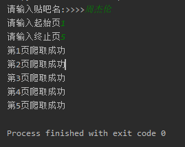
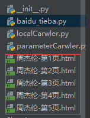

之后我们定义一个名叫BaiduSpider类用来爬取信息
属性有 url:用来爬取的网址 headers:请求头
class BaiduSpider(object):
def __init__(self):
self.url = 'http://tieba.baidu.com/f?kw={}&pn={}'
self.headers = {'User-Agent':'Win7:Mozilla/5.0 (Windows NT 6.1; WOW64) AppleWebKit/535.1 (KHTML, like Gecko) Chrome/14.0.835.163 Safari/535.1'}
1 #获取页面
2 def get_page(self,url):
3 #定义请求对象
4 req = request.Request(url=url,headers=self.headers)
5 #发起请求
6 res = request.urlopen(req)
7 #获取相应对象
8 html = res.read().decode('utf-8', 'ignore')
9 return html#保存数据
def write_page(self,filename,html):
#将数据保存到本地
with open(filename,'w',encoding='utf-8') as f:
f.write(html)#主函数
def main(self):
name = input('请输入贴吧名:>>>>')
start = int(input('请输入起始页'))
end = int(input('请输入终止页'))
for page in range(start,end+1):
#拼接URL地址 'http://tieba.baidu.com/f?kw{}&pn={}'
#进行编码 将中文字符编码为url地址编码
kw = parse.quote(name)
#获取当前页数
pn = (page-1)*50
#进行url地址的拼接
url = self.url.format(kw,pn)
#获取相应
html = self.get_page(url)
filename = '{}-第{}页.html'.format(name,page)
self.write_page(filename,html)
#提示
print('第{}页爬取成功'.format(page))
#控制爬取速度
time.sleep(random.randint(1,3))
#导入模块
from urllib import request,parse
import time
import random
class BaiduSpider(object):
def __init__(self):
self.url = 'http://tieba.baidu.com/f?kw={}&pn={}'
self.headers = {'User-Agent':'Win7:Mozilla/5.0 (Windows NT 6.1; WOW64) AppleWebKit/535.1 (KHTML, like Gecko) Chrome/14.0.835.163 Safari/535.1'}
#获取页面
def get_page(self,url):
#定义请求对象
req = request.Request(url=url,headers=self.headers)
#发起请求
res = request.urlopen(req)
#获取相应对象
html = res.read().decode('utf-8', 'ignore')
return html
#解析数据
def parse_page(self):
pass
#保存数据
def write_page(self,filename,html):
#将数据保存到本地
with open(filename,'w',encoding='utf-8') as f:
f.write(html)
#主函数
def main(self):
name = input('请输入贴吧名:>>>>')
start = int(input('请输入起始页'))
end = int(input('请输入终止页'))
for page in range(start,end+1):
#拼接URL地址 'http://tieba.baidu.com/f?kw{}&pn={}'
#进行编码 将中文字符编码为url地址编码
kw = parse.quote(name)
#获取当前页数
pn = (page-1)*50
#进行url地址的拼接
url = self.url.format(kw,pn)
#获取相应
html = self.get_page(url)
filename = '{}-第{}页.html'.format(name,page)
self.write_page(filename,html)
#提示
print('第{}页爬取成功'.format(page))
#控制爬取速度
time.sleep(random.randint(1,3))
if __name__ == '__main__':
spider = BaiduSpider()
spider.main()

html文件打开后 与我们正常打开的网页并没有太大的差别